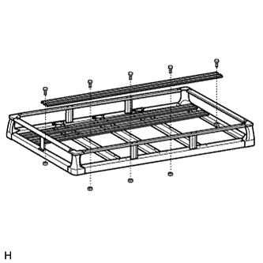
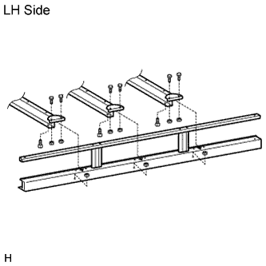
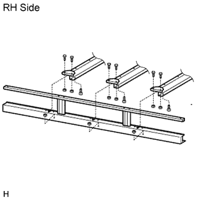
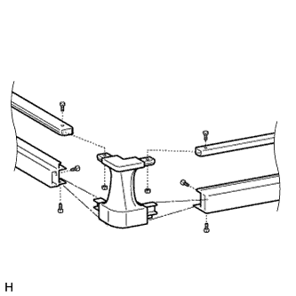
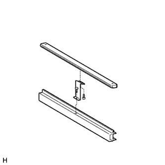
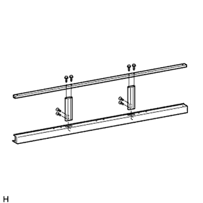
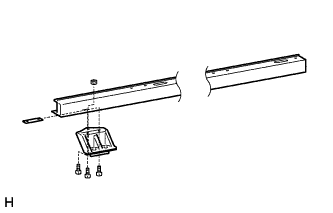
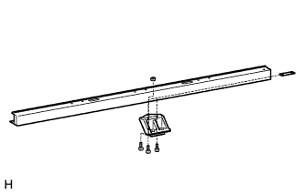
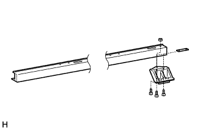

ROOF RACK > DISASSEMBLY |
| 1. REMOVE NO. 1 ROOF RACK DECK BOARD |
 |
Remove the 5 nuts, 5 bolts and No. 1 roof rack deck board.
| 2. REMOVE NO. 1 ROOF RACK SUPPORT PLATE |
 |
Remove the 9 nuts and 9 bolts.
 |
Remove the 9 nuts, 9 bolts and 3 No. 1 roof rack support plates.
| 3. REMOVE NO. 1 ROOF RACK END COVER |
 |
Remove the 2 nuts and 6 bolts from each No. 1 roof rack end cover.
Remove the 4 No. 1 roof rack end covers.
| 4. REMOVE FRONT UPPER ROOF RACK FRAME SUB-ASSEMBLY |
 |
Remove the 2 bolts and front roof rack bracket from the lower No. 2 roof rack frame sub-assembly and front upper roof rack frame sub-assembly to separate them.
| 5. REMOVE UPPER NO. 1 ROOF RACK SIDE RAIL FRAME |
 |
Remove the 4 bolts, 4 screws and 2 roof rack side frame supports from the upper No. 1 roof rack side rail frame and lower roof rack side rail frame to separate them.
| 6. REMOVE FRONT ROOF RACK LEG LH |
 |
Remove the 2 nuts, 3 bolts, front roof rack leg and lower roof rack frame gusset.
| 7. REMOVE FRONT ROOF RACK LEG RH |
| 8. REMOVE CENTER ROOF RACK SUPPORT LH |
 |
Remove the 2 nuts, 3 bolts, center roof rack leg and lower roof rack frame gusset.
| 9. REMOVE CENTER ROOF RACK SUPPORT RH |
| 10. REMOVE REAR ROOF RACK LEG LH |
 |
Remove the 2 nuts, 3 bolts, rear roof rack leg and lower roof rack frame gusset.
| 11. REMOVE REAR ROOF RACK LEG RH |